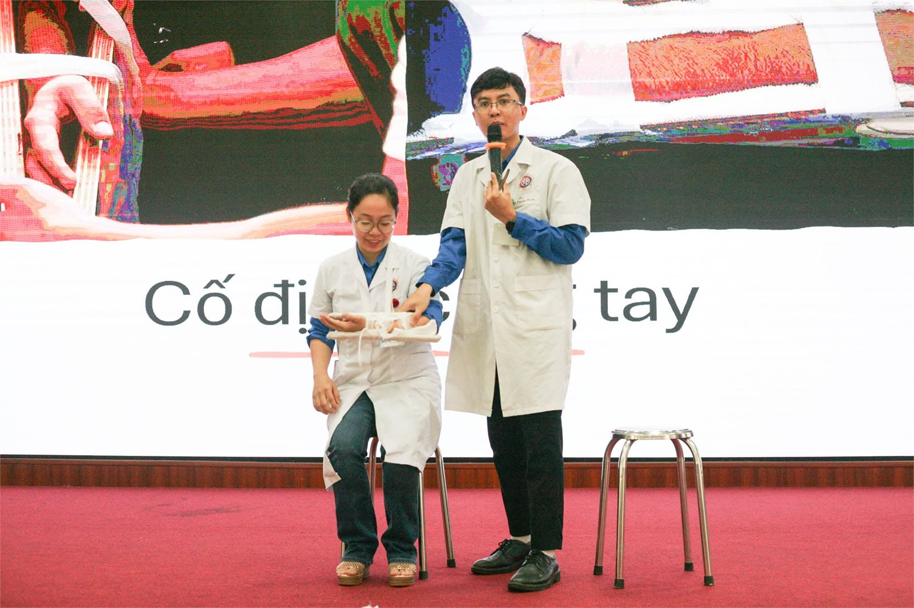

Diễn giả tại seminar
Diễn giả tại workshop, seminar sức khỏe
Mình nhận chia sẻ chuyên môn tại các buổi workshop, seminar chăm sóc sức khỏe cho doanh nghiệp, trường học và cộng đồng — nội dung linh hoạt theo đối tượng người nghe, từ buổi nói chuyện ngắn đến workshop thực hành sơ cứu tại chỗ.
Chuyên môn
Nội dung có thể chia sẻ
- Kiến thức y học cổ truyền, châm cứu trong hỗ trợ giảm đau, phục hồi vận động
- Chăm sóc cột sống, phòng đau cổ vai gáy cho dân văn phòng
- Phòng ngừa chấn thương khi tập luyện, chơi thể thao
- Sơ cấp cứu cơ bản, xử trí tai nạn thương tích tại nơi làm việc

Đã tham gia
Một số buổi chia sẻ đã thực hiện
Seminar cột sống — Tigren
Seminar "Các vấn đề về cột sống của dân văn phòng" cho toàn thể nhân viên Tigren.
Tập huấn sơ cấp cứu — Mai Dịch
Hội nghị tập huấn sơ cấp cứu, phòng tránh tai nạn thương tích ở trẻ em, phường Mai Dịch.